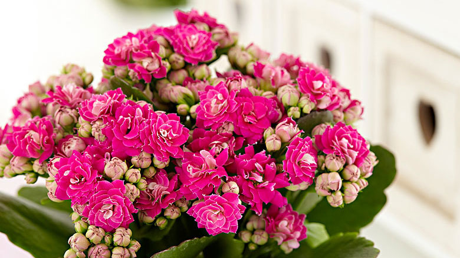

Это растение почти не требует внимания и прекрасно растет в самых разных условиях, делая его идеальным выбором для занятых людей.

Прекрасно подходит для тех, кто не хочет много заботиться о растениях. Оно требует минимального ухода и при этом красиво цветет.
